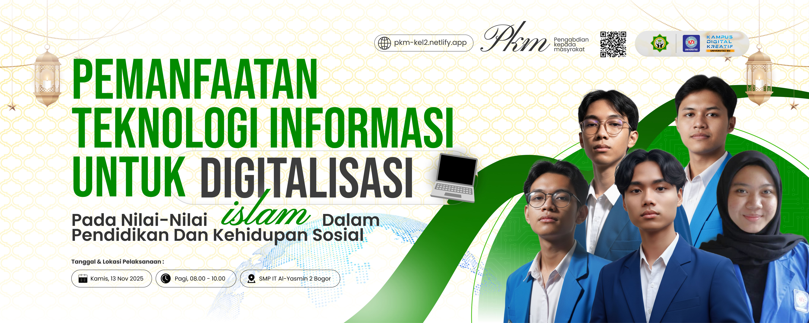

DIGINAS (Digitalisasi Nilai-nilai Islam)
 diunggah oleh Tim Pelaksana PKM
(pada November, 2025)
diunggah oleh Tim Pelaksana PKM
(pada November, 2025)

Bogor, 13 November 2025 –
Dalam rangka
memenuhi program Pengabdian
Kepada Masyarakat (PKM), Kami
kelompok mahasiswa semester
7 Universitas Bina Sarana Informatika Margonda, Program studi Sistem Informasi, yang dipimpin
oleh Muhamad Khadaffy
bersama Kayla Aulia Subekti, Muhammad Aditya, Asyffa Elsa Hakim, Ade Tyas Alfarizza, Nanda
Nurvika, Fariz Hanafi, Farhan Damara Fiansah, Ramzi Akbar Ramadhan, dan Muhammad Mannan
Mugits
menggelar penyuluhan
tentang “Pemanfaatan Teknologi Informasi Untuk Digitalisasi Nilai-nilai Islam Dalam
Pendidikan
Dan Kehidupan Sosial",
kepada siswa/i di SMP IT AL-YASMIN 2, kelas VIII Pandai.
Penyuluhan ini dilaksanakan pada pukul 08.00 – 10.00 WIB
di
SMP IT
AL-YASMIN 2 yang berlokasi di
Jl. H. Ahmad Yunus No.1, RT 01/RW 04, Kelurahan Sukaresmi, Kecamatan Tanah Sereal, Kota Bogor,
Provinsi Jawa Barat,
16165.
Kegiatan ini bertujuan memberikan pemahaman kepada siswa-siswi mengenai cara memanfaatkan
teknologi secara positif,
bijak, dan sesuai dengan nilai-nilai Islam di era digital yang terus berkembang.
Acara dilaksanakan dalam dua sesi utama. Sesi pertama membahas nilai-nilai Islam yang
dapat diterapkan dalam penggunaan
teknologi sehari-hari, termasuk etika bermedia sosial, adab dalam berkomunikasi digital, serta
pentingnya memilih konten
yang baik dan bermanfaat. Sesi kedua berfokus pada pemanfaatan teknologi digital islami, seperti
penggunaan aplikasi
Al-Qur’an digital, platform kajian online, serta berbagai contoh proyek dakwah digital yang
dapat menginspirasi generasi
muda untuk memanfaatkan internet sebagai sarana kebaikan.
Kegiatan ini berlangsung interaktif dengan penyampaian materi, diskusi ringan, serta sesi kuis
yang membuat para siswa
lebih antusias. Para peserta menunjukkan ketertarikan tinggi terhadap pembahasan literasi
digital islami dan memberikan
respon positif melalui survei evaluasi yang dibagikan setelah acara.
Ketua pelaksana menyampaikan bahwa kegiatan ini diharapkan mampu menumbuhkan kesadaran siswa
dalam menggunakan teknologi
secara bertanggung jawab serta memotivasi mereka untuk berkontribusi pada penyebaran konten
positif di lingkungan
digital. Pihak sekolah juga menyambut baik kegiatan ini dan berharap kerja sama serupa dapat
kembali dilakukan pada masa
mendatang.
Dengan
terselenggaranya kegiatan pengabdian masyarakat ini, diharapkan siswa-siswi SMP SMP IT
AL-YASMIN 2 semakin memahami
pentingnya literasi digital bernilai islami serta mampu menerapkan adab dan etika digital dalam
kehidupan sosial mereka.
Program ini juga membuka peluang tindak lanjut berupa pelatihan lanjutan dan pengembangan proyek
digital islami
sederhana yang dapat melibatkan para siswa secara langsung.
Sebagai penutup, Ketua Pelaksana menyampaikan harapan agar kegiatan ini tidak hanya menjadi
pengalaman belajar sesaat,
tetapi juga menjadi langkah awal bagi para siswa untuk lebih bijak, beradab, dan bertanggung
jawab
dalam memanfaatkan
teknologi. Beliau juga berharap agar nilai-nilai Islam yang telah dipelajari dapat terus
diamalkan
dalam aktivitas
digital sehari-hari, sehingga para siswa dapat tumbuh menjadi generasi yang cerdas, unggul, dan
mampu memberikan dampak
positif di dunia nyata maupun dunia digital. Kegiatan ini diharapkan dapat menjadi pintu bagi
program-program lanjutan
yang semakin memperkuat literasi digital islami di lingkungan sekolah.